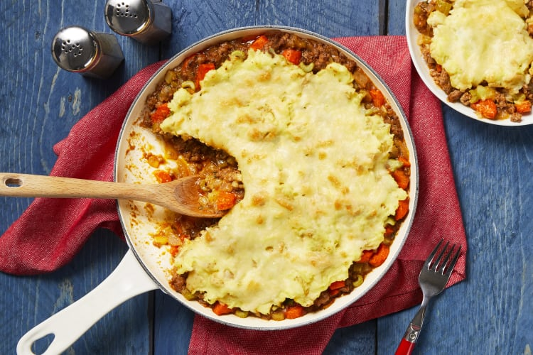

Home
Pub-Style Shepherd's Pie

Description
A combination of ground beef, onion, celery, and carrots in a rich tomato
sauce, topped with creamy mashed potatoes and sprinkled with sharp white
cheddar. Broiled to a nice crust.
10 minutes to prep; 35 minutes to cook.
Ingredients
- Cooking Oil, 1 Tbsp
- Salt
- Pepper
- Butter, 2 Tbsp
- Dried Thyme, 1 oz
- Tomato Paste, 1.5 oz
- Garlic Powder, 1 tsp
- Flour, 1 Tbsp
- Beef Stock Concentrate, 1 Tbsp
- Sour Cream, 2 Tbsp
- White Cheddar Cheese, 1/2 cup
- Celery, 2.5 oz
- Carrot, 3 oz
- Yellow Onion, 1
- Yukon Gold Potatoes, 12 oz
- Ground Beef, 10 oz
Steps
-
Heat broiler to high. Wash and dry produce. Dice potatoes into 1/2-inch
pieces. Trim, peel, and halve carrot lengthwise; slice crosswise into
1/4-inch-thick half-moons. Finely dice celery. Halve, peel, and finely
chop onion.
-
Place potatoes in a medium pot with enough salted water to cover by 2
inches. Bring to a boil and cook until tender, 15-20 minutes. Drain and
return potatoes to pot. Mash with sour cream and 2 Tbsp butter until
smooth and creamy, adding splashes of water as needed. Season generously
with salt and pepper. Keep covered off heat until ready to serve.
-
While potatoes cook, heat a drizzle of oil in a medium, preferably
ovenproof, pan over medium-high heat. Add carrot; season with salt and
pepper. Cook, stirring, until slightly softened, 2-3 minutes. Add
celery, onion, and a large drizzle of oil; season with salt and pepper.
Cook, stirring, until veggies are just tender, 5-7 minutes. TIP: If
veggies begin to brown too quickly, add a splash of water. Stir in
garlic powder and thyme. Cook until fragrant, 30 seconds.
-
Add beef to pan with veggies; season with salt and pepper. Cook,
breaking up meat into pieces, until browned and cooked through, 4-6
minutes. Add tomato paste and flour; cook, stirring, until thoroughly
combined, 1 minute.
-
Gradually pour 1/2 cup water into pan with beef mixture. Stir in stock
concentrates and bring to a boil. Cook until mixture is very thick, 1-2
minutes. Turn off heat. Taste and season with salt and pepper. TIP: If
your pan isn't ovenproof, transfer mixture now to a baking dish.
-
Top beef filling with an even layer of mashed potatoes, leaving a gap
around edge of pan. Evenly sprinkle with cheddar. Broil until browned,
3-4 minutes. TIP: Watch carefully to avoid burning. Serve directly from
pan.